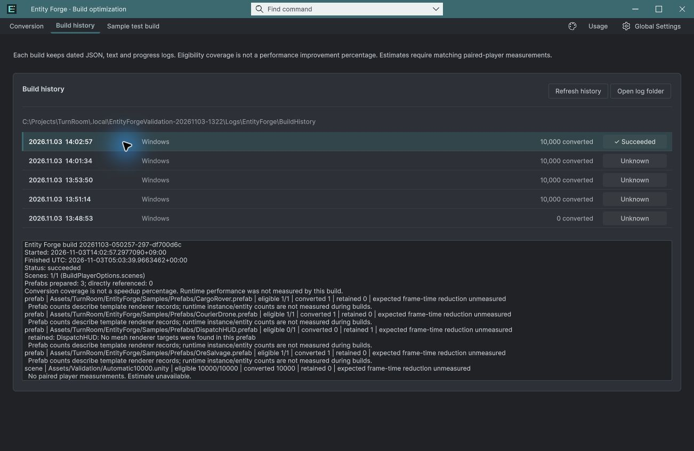

Tracefolio REPORTS & ISSUES
Tracefolio REPORTS & ISSUES빌드 기록을 날짜·상태·변환 개수의 요약 행으로 정리
완료JSON 파일명 대신 빌드 시각, 플랫폼, 변환 개수와 상태 배지를 한 줄에 표시합니다.
작업 결과
요약 행 적용 및 실제 선택/키보드/새로고침/테마 검증 통과
변경 내용
적용 내용
편집 가능한 ForgeHistoryRow.uxml과 고정 36px 행을 추가했습니다. 기록 JSON을 한 번 읽어 요약하고 원본 경로는 툴팁에 유지합니다. 선택 강조와 호버, 새로고침 선택 복원을 적용했습니다. 상태와 개수는 9개 언어 자원을 사용합니다.
검증
실제 Unity 6000.0.83f1에서 날짜와 JSON startedUtc 대조, 10,000개 변환 및 succeeded/unknown 상태 대조, 마우스 선택·키보드 Down·새로고침 선택 유지·밝은/어두운 테마 확인. 7개 새 문구의 9개 언어 및 {0} 인자 검사 통과. 캡처는 영어입니다. 기존 로그 파일을 수정하거나 빌드하지 않았습니다.


남은 사항
이번 목록 정리 요청은 적용했습니다. 기존 과거 기록의 unknown은 원래 기록값 그대로 표시합니다. 다른 언어 배치 전체의 시각 검증과 기존 전체 출시 검증은 완료로 표시하지 않습니다. 교훈 검토: 내부 파일명 대신 사용자가 판단할 정보를 표시하는 기존 UX 요구를 적용했습니다. 전역 변경 없음.
작업 시간
- 제안 시간: 3~5분 · 시작 2026-11-03 14:17:46 KST
- 실제로 완료된 시간: 구현·실제 확인 약 3분 12초 · 2026-11-03 14:20:58 KST. 공개 배포는 이후 확인.
- XERJ: 실패 — XERJ node is not running. rg와 실제 UXML·USS·현재 Unity로 확인.